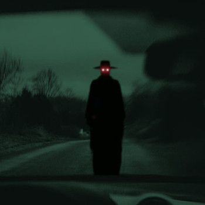
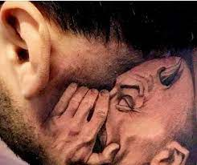
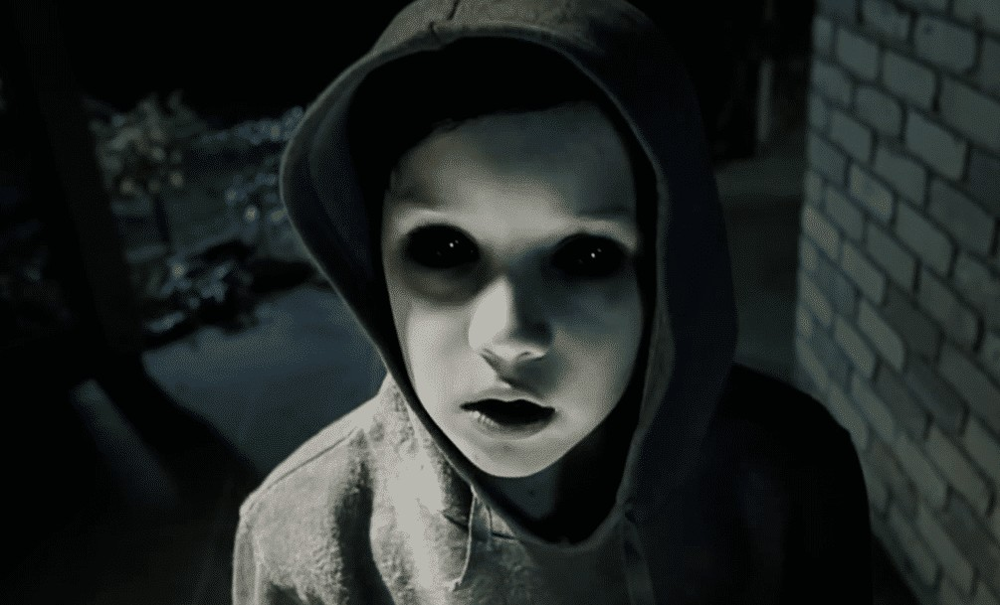
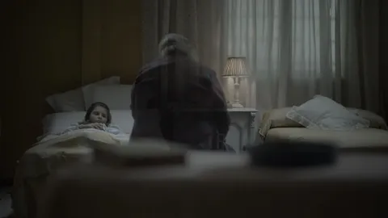

ESTA PAGINA ESTA ECHA PARA LOS AMANTES DE LO PARANORMAL
La leyenda es una narración sobre hechos sobrenaturales y naturales o una mezcla de ambos que se transmite de generación en generación, de forma oral o escrita. Se ubica en un tiempo y lugar similar al de los miembros de una comunidad, lo que aporta cierta verosimilitud al relato
¿Qué se trata la leyenda La Llorona? Leyenda de la Llorona: historia, análisis y simbología ... La leyenda de la Llorona gira entorno al espectro de una mujer que vaga por distintos lugares, cerca de ríos, lagos, pueblos y ciudades, lamentándose por el crimen que ha cometido: asesinar a sus hijos

¿Qué se trata la leyenda del charro negro? La leyenda del Charro Negro cuenta la historia de un espectro que alguna vez fue hombre y que, por su interminable ambición, fue condenado a sufrir los tormentos del infierno y a ser el cobrador de quienes, como él, tienen deudas pendientes con el diablo.

Esta leyenda urbana tiene su origen en la ciudad de Toluca. Se trata de una historia aterradora basada en un episodio real que tuvo lugar durante los años ochenta del siglo XX, cuando un autobús que transitaba por una carretera nocturna jamás llegó a su destino. El misterioso suceso dio pie a diferentes versiones sobre los acontecimientos que hoy en día se siguen transmitiendo.

¿De que trata el relato de "La sombra de mi novia"? Este relato fue hace como 3 años que me sucedió, en ese entonces tenia una pareja la cual ahora tenemos caminos separados, y a mi expareja de vez en cuando le sucedían cosas raras en su casa, cosas como alguien tocaba a la puerta y al asomarse no habia nadie, de momentos veía sombras, sentía pesadez en el ambiente, pero un dia sucedió algo diferente, su tia quien vivía con la misma casa con ella, al salir afuera escucho que de su camioneta de ellos se cerro, cuando ni abierta debería de haber estado, al asomarse no habia nadie, llamo a su familia quien acudió al patio incluyendo mi ex-pareja quien tomo una foto, foto la cual se podía apreciar en el asiento de conductor un esquelo bien clarito, pero bien clarito, pero lo peor es que en la parte de atrás en las sombras del asiento del conductor se podía apreciar varias caras, no humanas, ojos enormes con sonrisas de dientes afilados aun mas grandes y sobrepasan el tamaño de cualquier cara humana, dias despues de ese suceso, yo en lo que sabia que no era un sueño, era una visión o viaje-astral donde recorria una avenida la cual siempre transitaba con mi ex-pareja cuando era momento de irla a acompañar a su casa, pero esta ocasión era de noche y conforme avanzaba y pasaba los postes de luz, la luz de estos se apagaba conforme los cruzaba , hasta que en el ultimo poste me quede parado bajo su luz, me di la vuelta y en la oscuridad incluso podía ver algo aun mas oscuro moviéndose y tenia forma, media como 1M. 30, era pequeño pero regordete, y podía notar esa misma cara, esos ojos y sonrisa de dientes afilados, era la misma que aparecía en la foto de mi ex-pareja dias antes, y esta cosa se acercaba, hasta que llego a la luz del poste y podía verlo con mejor claridad, era peludo y tenia muchos mas dientes de lo que parecía, sus manos eran cortas con uñas muy largas y afiladas, y sus pies aun mas cortas, pero era feo, feo con madres, y al estar casi adentro de la luz del poste se quedo un momento riéndose burlonamente de mi, entonces me quede desafiantemente, cuando esta cosa se acerco absurdamente rapido hacia mi, se me avienta , y yo en el suelo tratando de quitármelo por lo pesado que era, lo único que pensé en ese momento fue golpearlo y alejar su boca llena de dientes de mi cara, podía ver incluso su lengua, era puntiaguda llena de granos y baba negra, en un arranque de coraje le di un golpe tan fuerte que me lo quite de encima, dejando que la ira tomara control ahora yo lo tenia sometido golpeando su cara, hasta que no supe en que momento mi mano lo atravezo y sabia que tambien habia perforado su corazon, si es que esa cosa podía tener uno, no tardo esa cosa en convertise en polvo, y el polvo se convertía en oscuridad, desvaneciendose lentamente, yo exhalaba de cansancio mientras que alrededor mió podía ver en la oscuridad, mas allá de la luz de ese poste aparecieron muchas figuras de todo tipo, unas mas humanoides que otras, otras eran aberrantes, de todos lo tamaños, pero sabia que no se atreverían a acercarme a mi, me fui a casa según en mi visión- viaje astral, sin mas problemas, y cuidando de que estas cosas no vieran donde era, pero no me siguieron, al entrar a la puerta de mi casa desperté, despues de esa visión mi ex-novia nunca mas volvió a experimentar ningún suceso paranormal en su casa, de ningún tipo y ella estaba mas tranquila y feliz.
"Una vez estaba con mi madre visitando a una amiga. Tendría como ocho años en ese momento. Mientras jugaba con algunos juguetes y ella hablaba con su amiga, una pelota, como de clase de gimnasia, empezó a rodar por las escaleras y se detuvo en la habitación en la que estábamos. Los tres nos paramos y la miramos durante unos segundos hasta que el balón empezó a volar por la habitación y rompió una ventana. Salimos corriendo muy rápido de esa casa. Al final mi madre nunca dijo mi nombre oh me llamo.".
Cuando tenía 10 años, se encontrara una noche durmiendo, cuando le despertó el sonido de la puerta de su habitación abriéndose. Pensando que era su madre, ni siquiera se inquietó. Notó como se sentaban en la cama y, cuando abrió los ojos se sorprendió al no ver a su madre. A los pies de la cama había un chico, sentado con las piernas cruzadas dirigiendo su mirada hacia él, “aunque en realidad tenía las cuencas de los ojos negras, como vacías, como si no tuviera ojos”. “Extendió su mano hacia mí y me asusté, pero reparé en que me mostraba una caja negra. Me acerqué para cogerla y, en ese instante retrocedió. Me incorporé en la cama, extendí mi mando y le dije ‘dámela’. Justo en ese momento parpadeé y el chico ya no estaba. Solo estaba la huella en las sábanas de que alguien había estado sentado ahí”, relata. A la mañana siguiente se lo explicó a su madre, pero ella le dijo que todo había sido un sueño y no le dio más vueltas. Pasaron cinco años, y él estaba con su novia del instituto en casa. “Esperando a que vinieran a recogerla se quedó dormida. Cuando llegaron sus padres la desperté. Ella dió un respingo y se quedó mirando a una esquina, donde la pared se une con el techo”. Cuando le preguntó qué le había pasado ella dijo: “Creo que estaba soñando con esta habitación; había en la pared un niño sin ojos mirándome”. Él le contó lo que le había pasado hace cinco años, pero finalmente quedó como un hecho aislado. Sin embargo no acabó aquí. Cinco años más tarde, nuestro protagonista seguía con la misma chica y en la misma casa, pero ahora con una niña de dos años. “Mi hija se despertaba todas las noches y hablaba. Durante un tiempo pensamos que era algo normal, cosas de niños, hasta que comencé a reparar en que era la misma conversación cada noche. Un día le pregunté con quien hablaba, y me dijo que era un niño pequeño, que era simpático”. “Se ha perdido y busca a su mamá”, le dijo su hija. Ella siguió manteniendo conversaciones con el niño hasta que ese mismo año decidieron mudarse, y la niña no volvió a hablar con nadie por las noches.
se encontraba con su esposa en la cama, a eso de las tres de la madrugada. De repente él se despertó fijando su vista en la lámpara de su mesilla de noche. En ese instante la lámpara se deslizó y cayó al suelo sin que aparentemente nadie la tocase. En ese momento su mujer se despertó sobresaltada por el ruido. “Le conté lo que había pasado y estuvimos hablando de ello pero, ante mi estupor y, sin encontrarle explicación, decidimos no levantarnos, tratar de dormir y recoger los pedazos a la mañana siguiente, Cuál fue nuestra sorpresa al levantarnos y ver cómo la lámpara estaba a los pies de nuestra cama… intacta, sin un rasguño, colocada en el suelo. Mi mujer y yo aún estamos intentando encontrarle sentido a lo que ocurrió”
